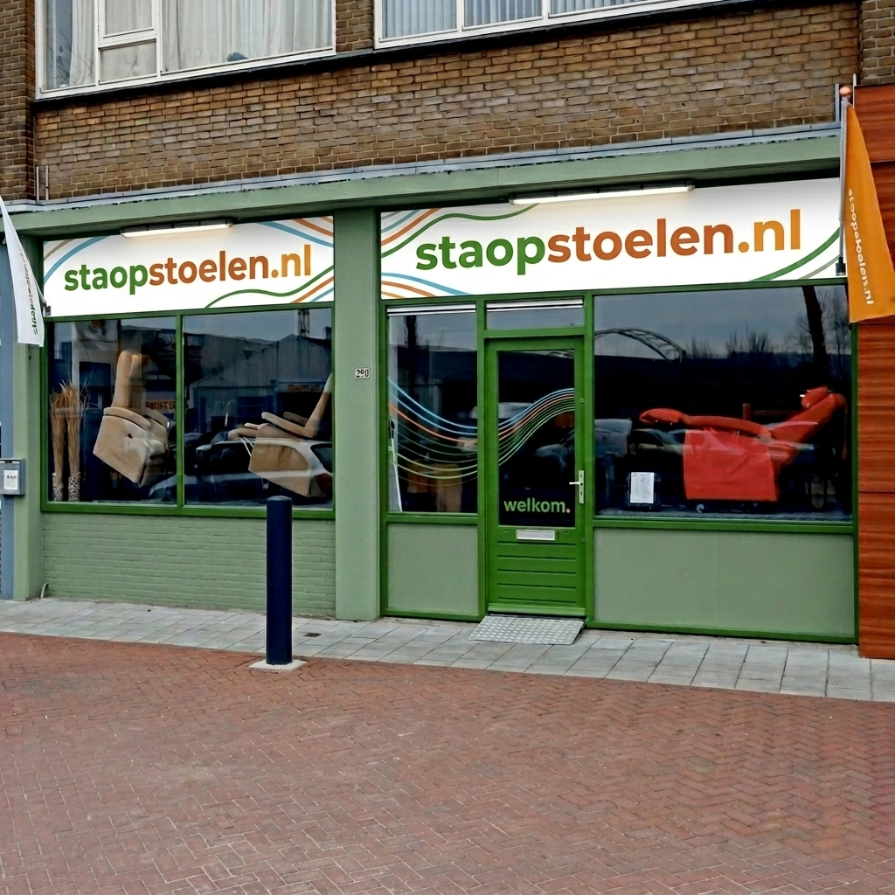
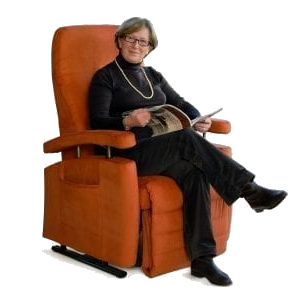
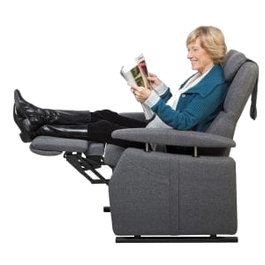
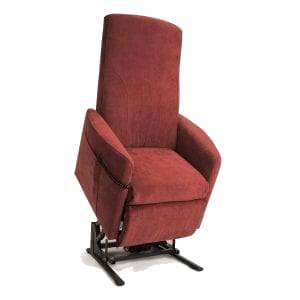
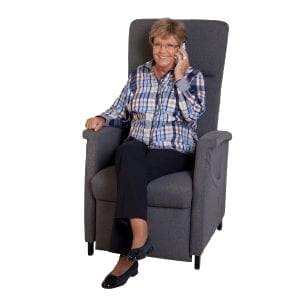
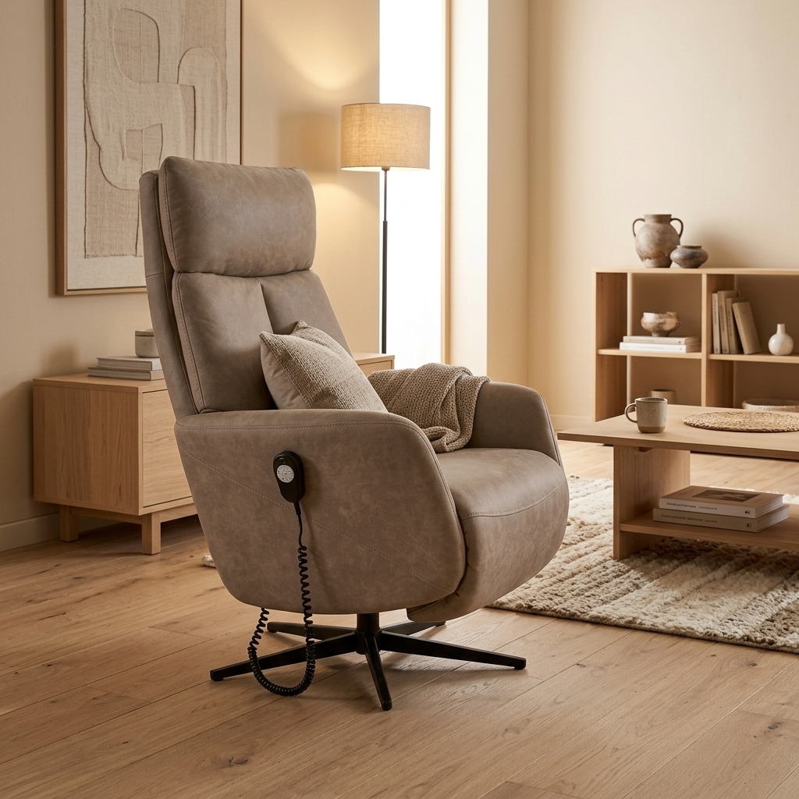
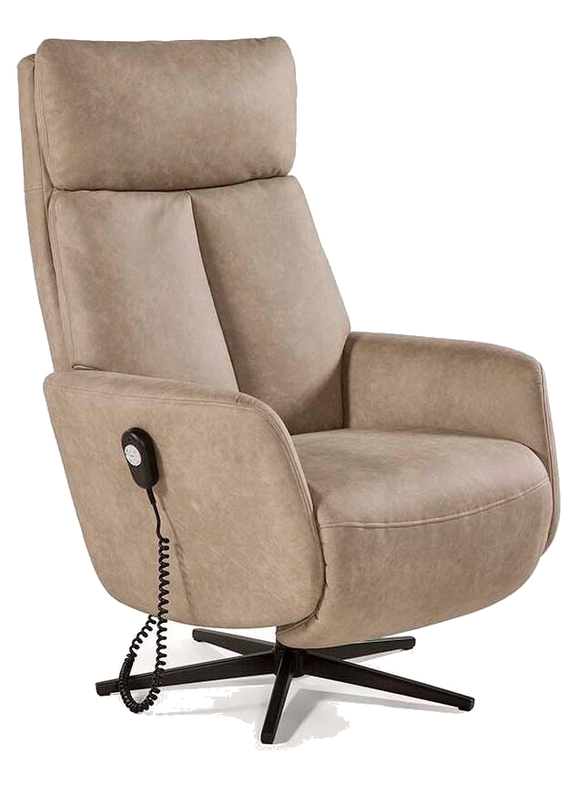

Woont u in Puttershoek of Maasdam en zoekt u een ergonomische sta-op stoel die uw lichaam optimaal ondersteunt? Bij staopstoelen.nl helpen we u graag aan de perfecte fauteuil.
Snel bereikbaar vanuit Puttershoek
Slechts 12 minuten rijden via de Kiltunnel naar onze showroom in Dordrecht. Volledig gelijkvloers met gratis parkeren.
Gratis Thuisdemonstratie
Kunt u niet makkelijk reizen of verblijft u in een zorgappartement in Puttershoek & Maasdam? Wij komen geheel kosteloos met 2 of 3 stoelen bij u thuis proefzitten.
Fysiotherapeutisch Ingemeten
Geen gladde verkopers, maar een deskundige Bewegingstechnoloog (Geertjan) die uw zithoogte, zitdiepte en lendesteun op de millimeter nauwkeurig instelt.
In 12 Minuten vanuit Puttershoek & Maasdam
Vanaf Puttershoek en Maasdam bent u via de N217 en Kiltunnel in 12 minuten aan de Merwedestraat 239 in Dordrecht. Gratis parkeren op eigen terrein.

Populaire Sta-op Stoelen in Regio Puttershoek & Maasdam
Hieronder vindt u een selectie van onze meest gevraagde stoelmodellen. Of u nu kiest voor splinternieuw maatwerk van Fitform of Doge, of een gecertificeerd gereviseerde topstoel met garantie: wij hebben altijd tientallen stoelen direct leverbaar.

Fitform 570 Vario
Dé Nederlandse maatwerkstandaard. 3-motorig met onafhankelijke kantelverstelling, relaxstand en opblaasbare lendensteun. Zithoogte, zitdiepte en armleggers 100% instelbaar.

Fitform 574 Vario
Ideaal voor kleinere woonkamers of appartementen in Puttershoek & Maasdam. Slank en stijlvol ontwerp met hetzelfde fysiotherapeutische zitcomfort en 3-motorige techniek als de 570.

Doge Belluno & Bergamo
Favoriet onder ergotherapeuten. Uitmuntende ondersteuning bij rugklachten, Parkinson of reuma. Volledig modulair op te bouwen met diverse zorgaanpassingen.

Fitform 580 Vario
Speciaal ontwikkeld voor zwaardere personen of mensen die extra zitbreedte wensen. Versterkt frame en extra krachtige motoren voor betrouwbare en veilige ondersteuning.

Fitform 200 & 600 Collectie
De allernieuwste generatie moderne design sta-op fauteuils. Onzichtbare technologie, leverbaar in prachtige stoffen en ledersoorten. Inclusief officiële fabrieksgarantie.

Gereviseerde A-Occasions
Topmerken (Fitform, Doge, Farstrup, Prominent) technisch 100% gecontroleerd, diep gereinigd en op uw maat ingesteld. Duurzaam, direct leverbaar en inclusief garantie.

Geertjan Klein Haneveld
Erkend Zitspecialist & Bewegingstechnoloog
"Een sta-op stoel moet zitten als een maatpak. Een stoel die 2 centimeter te hoog of te diep is, zorgt al snel voor afknelling in de knieholtes of pijn in de onderrug. Ik neem ruim de tijd om uw lichaam op te meten en stel de stoel persoonlijk voor u af — in onze showroom of bij u thuis in Puttershoek & Maasdam."
Afspraak met Geertjan MakenVeelgestelde Vragen over Sta-op Stoelen in Puttershoek & Maasdam
Hoe bereik ik de showroom vanuit Puttershoek & Maasdam?
Vanaf Puttershoek/Maasdam volgt u de N217 door de Kiltunnel naar Dordrecht. Neem afrit Staart/Merwedestraat naar nummer 239. Reistijd bedraagt circa 12 minuten.
Hoe werkt een gratis thuisdemonstratie in Puttershoek & Maasdam?
Wanneer u minder mobiel bent of vervoer lastig is, bellen we eerst even om uw wensen, lengte en postuur door te nemen. Vervolgens laadt Bewegingstechnoloog Geertjan 2 of 3 specifieke stoelen in de bezorgbus en komt hij bij u thuis in Puttershoek & Maasdam. U kunt in uw eigen vertrouwde woonkamer proefzitten. Dit is 100% gratis en verplicht u tot niets!
Wat kost een goede sta-op stoel?
Bij ons vindt u al gecertificeerd gereviseerde A-merk occasions (zoals Fitform en Doge) vanaf € 595,-, inclusief garantie en maatwerkafstelling. Splinternieuwe maatwerkstoelen van Fitform en Doge beginnen rond de € 1.750,- tot € 2.950,- afhankelijk van motoren (1, 2 of 3 motoren), stoffering (sterke microvezel of luxe leer) en zorgaanpassingen.
Bezorgen jullie de stoel ook gratis in Puttershoek & Maasdam?
Ja! Wij bezorgen met onze eigen bezorgdienst in heel Puttershoek & Maasdam. We zetten de stoel netjes op de gewenste plek in uw woonkamer, stellen hem ergonomisch af op uw lichaam en nemen alle verpakkingsmaterialen mee terug. Desgewenst kunnen we ook uw oude stoel gratis afvoeren.
Vergoedt de WMO in Puttershoek & Maasdam een sta-op stoel?
Een standaard sta-op stoel wordt door gemeenten vaak gezien als een 'algemeen gebruikelijke voorziening'. Echter, bij specifieke medische indicaties (zoals ernstige reuma, ALS, MS, Parkinson of extreme lichaamsmaten) kan er via de WMO een voorziening of PGB (Persoonsgebonden Budget) worden toegekend. Wij helpen u graag met een gespecificeerde offerte en een officieel ergonomisch meetrapport voor uw WMO-consulent of ergotherapeut.
Ervaar het Zitcomfort Zelf — In de Showroom of Thuis
Kom vrijblijvend proefzitten aan de Merwedestraat 239 in Dordrecht of vraag direct een gratis thuisdemonstratie in Puttershoek & Maasdam aan.